DRAFT: This article is a scaffold. As of November 28, 2026, its sections are outlined and its examples run; the prose between them is to be written. The distributed sections start from a graph partitioned by rows and will grow toward full shuffles. The matrix notation follows the path algebra of [8] and the distribution notation follows [1] and [2], so a reader can move between them.
Introduction
[To be written: property graphs (TinkerPop's modern graph [5]), traversals on one machine and across many, and the correspondence between a graph and its adjacency matrix that the rest of the article makes exact.]
A graph \(G = (V, E)\), \(E \subseteq (V \times V)\), with \(n = |V|\), is its adjacency matrix \(\mathbf{A} \in \{0,1\}^{n \times n}\), where \(\mathbf{A}_{i,j} = 1\) when \((i,j) \in E\) [8]. By the rules of matrix multiplication,
\[ \mathbf{A}^{(t)}_{i,j} = \sum_{l \in V} \mathbf{A}^{(t-1)}_{i,l} \cdot \mathbf{A}_{l,j} \qquad t \geq 2, \]
is the number of walks of length \(t\) from \(i\) to \(j\): a traversal is a product, and a step of a traversal is a multiplication by \(\mathbf{A}\). Two algebras stand behind that sentence. One keeps the walks themselves, the other keeps only how many there are. metatron has both, as types.

Figure 1 draws one traversal both ways. On the left, a traverser walks the modern graph,
g:V/1.out(knows).out(created): from marko along a knows edge to josh, and on along josh's created edges to ripple
and lop. The rec algebra keeps those walks, josh included. On the right, the label slices multiply, *knows * *created,
and the product sums over the join vertex, $\mathbf{Z}{i,j} = \sum{l} \mathcal{A}^{\texttt{knows}}{i,l},
\mathcal{A}^{\texttt{created}}{l,j}$, so it keeps how many walks join each pair and forgets which. \(\varphi\), defined
below, maps the one onto the other.
Rings and distributivity
A ring \(\langle R, +, \cdot, 0, 1 \rangle\) is an abelian group under \(+\) and a monoid under \(\cdot\), tied by the two distributive laws
\[ a\,(b + c) = a\,b + a\,c \qquad\qquad (a + b)\,c = a\,c + b\,c. \]
Read right to left, the laws factor: a sum of terms that share a factor becomes one term. Read left to right, they distribute: one term becomes a sum whose summands share nothing, and summands that share nothing can be computed anywhere [1], [2].
A graph split by its rows is a sum. Let each place \(p\) own the vertices \(V_{p}\), \(V = \bigcup_{p} V_{p}\), and write \(\mathbf{R}_{V_{p}} = \sum_{i \in V_{p}} \mathbf{R}_{i}\) for the row filter of their rows [8]. The row filters sum to \(\mathbf{1}\), and the Hadamard product \(\circ\) distributes over \(+\), so
\[ \mathbf{A} = \mathbf{A} \circ \mathbf{1} = \sum_{p} \mathbf{R}_{V_{p}} \circ \mathbf{A} \qquad\text{and}\qquad \mathbf{A}\,\mathbf{A} = \sum_{p} (\mathbf{R}_{V_{p}} \circ \mathbf{A})\,\mathbf{A} \]
by right distributivity: one product becomes one per place. This is the shard identity of [2], with the seed's parts named by rows.
The same partition splits the unity. The unity of relations is the diagonal $\Delta_{V} = \sum_{i \in V} (i \Rightarrow i)$, the \(\mathbf{I}\) of [8], and a row filter is left multiplication by the part of the diagonal a place owns, \(\mathbf{R}_{V_{p}} \circ \mathbf{A} = \Delta_{V_{p}}\,\mathbf{A}\). So \(\mathbf{A} = \Delta_{V}\,\mathbf{A} = \sum_{p} \Delta_{V_{p}}\,\mathbf{A}\): one diagonal per place [9].
[To be written: semirings (walk counting lives in \(\mathbb{N}\), which has no additive inverses) against metatron's
rings (the uri and rec rings declare neg), and why traversal only needs the semiring.]
Fundamental Types and their Algebras
Every type declares its algebra in its declarations, read at ?decq: which instruction is its sum, which is its product,
and what its zero and one are.
Zero is not noobj. In Stream Ring Theory [1] the zero is a function, \(0(x) = \emptyset\),
and in mtron it is noobj: it outputs nothing, so a chain that meets it stops before its next instruction runs. A type's
ring cannot name its zero as noobj itself, or \(0 + a\) would never be computed. Each type names its zero by a value that
stands for nothing: uri's sentinel <noobj>, lst's [noobj] (the lst of a hole), and rec's empty [=>]. rel's
noobj=>noobj is still read as noobj, which is what its ring's declaration waits on.
A ring has one inverse under each operation. Under \(+\) the inverse is the \(-1\) point, the coefficient that cancels. Under \(\cdot\) a type may have a converse, the span \(-1\): a path reversed, a walk reversed, an arrow flipped. The converse is the transpose \(\mathbf{A}^{\top}\) of [8], an involution that reverses products, \((r\,s)^{\smile} = s^{\smile}\,r^{\smile}\) [3].
| type | zero | one | the inverse under \(+\) | the converse |
|---|---|---|---|---|
uri::T | <noobj> | <> | /a/b.neg(), </a/b{-1}> | </a/b>{-1}, b/a/ |
rec::T | [=>] | [id()=>id()] | [a=>b].neg(), [a=>{-1}b] | [a=>{b,c}].converse(), [b=>a,c=>a] |
rel::T | noobj=>noobj | id()=>id() | (a=>b).neg(), {-1}(a=>b) | (a=>b).converse(), b=>a |
uri::T: paths
mtron> *uri?decq
==>decs::[obj=>uri::T,
theory=>[
ring=>ring_theory::[
add=>!*/m/inst/plus?rng=/m/uri&dom=/m/uri,
mul=>!*/m/inst/mult?rng=/m/uri&dom=/m/uri,
zero=><noobj>,
one=><>],
add_group=>group_theory::[
op=>!*/m/inst/plus?rng=/m/uri&dom=/m/uri,
id=><noobj>,
inv=>!*/m/inst/neg?rng=/m/uri&dom=/m/uri],
add_monoid=>monoid_theory::[
op=>!*/m/inst/plus?rng=/m/uri&dom=/m/uri,
id=><noobj>],
mul_monoid=>monoid_theory::[
op=>!*/m/inst/mult?rng=/m/uri&dom=/m/uri,
id=><>]]]
The product of two paths is their concatenation. The sum of two paths that share a prefix and a suffix factors into one linear path that branches only where they differ:
mtron> /a/b * /c/d
==>/a/b/c/d
mtron> /a/b/c + /a/d/c
==></a/{b,d}/c>
\[ /a/b/c \;+\; /a/d/c \;=\; /a\,(b + d)\,/c \]
The factored form is both distributive laws read right to left at once: many paths layered into one.
The zero is <noobj> and the one is the empty path <>, the identity of concatenation. A span is a power, {0} is the
one, the inverse under \(+\) is the \(-1\) point on the path's last segment, and the span \(-1\) is the converse, the path
reversed:
mtron> </a/b>{2}
==>/a/b/a/b
mtron> </a/b>{0}
==><>
mtron> /a/b * <>
==>/a/b
mtron> /a/b.neg()
==></a/b{-1}>
mtron> </a/b>{-1}
==>b/a/
rec::T: walks
mtron> *rec?decq
==>decs::[obj=>rec::T,
theory=>[
ring=>ring_theory::[
add=>!*/m/inst/plus?rng=/m/rec&dom=/m/rec,
mul=>!*/m/inst/mult?rng=/m/rec&dom=/m/rec,
zero=>[=>],
one=>[id()=>id()]],
add_group=>group_theory::[
op=>!*/m/inst/plus?rng=/m/rec&dom=/m/rec,
id=>[=>],
inv=>!*/m/inst/neg?rng=/m/rec&dom=/m/rec],
add_monoid=>monoid_theory::[
op=>!*/m/inst/plus?rng=/m/rec&dom=/m/rec,
id=>[=>]],
add_commutative_monoid=>commutative_monoid_theory::[
op=>!*/m/inst/plus?rng=/m/rec&dom=/m/rec,
id=>[=>]],
mul_monoid=>monoid_theory::[
op=>!*/m/inst/mult?rng=/m/rec&dom=/m/rec,
id=>[id()=>id()]]]]
mtron> [a=>b] + [b=>c]
==>[a=>b,b=>c]
mtron> [a=>b] * [b=>c]
==>[a=>b=>c]
The sum merges entries. The product is the walk join: an entry whose value is \(b\) extends by the entry keyed \(b\), and
the join vertex stays in the walk, \([a \Rightarrow b] \cdot [b \Rightarrow c] = [a \Rightarrow b \Rightarrow c]\). The
zero is the empty rec [=>] and the one is [id()=>id()], the walk that goes nowhere, which the span {0} also
answers. The inverse under \(+\) puts the \(-1\) point on every value, and the converse reverses every walk: the span {-1}
on a rec literal, and converse() on any rec, a read's included.
mtron> [a=>b]{0}
==>[id()=>id()]
mtron> [a=>b] + [=>]
==>[a=>b]
mtron> [a=>b].neg()
==>[a=>{-1}b]
mtron> [a=>{b,c}].converse()
==>[b=>a,c=>a]
rel::T: relations
mtron> *rel?decq
==>decs::[obj=>rel::T,
theory=>[mul_monoid=>monoid_theory::[
op=>!*/m/inst/mult?rng=/m/rel&dom=/m/rel,
id=>id?A<=A()=>id?A<=A()]]]
mtron> (a=>b) + (b=>c)
==>a=>b
==>b=>c
mtron> (a=>b) * (b=>c)
==>a=>c
A rel is an arrow, and a relation is a finite sum of arrows with coefficients, a bag of rels. Under composition, relations form the ring of finitely supported matrices whose rows and columns are objects [9]: the arrow \(i \Rightarrow j\) is the matrix unit \(\mathbf{E}_{i,j}\), a rel's coefficient is its entry, and composition, which forgets the join vertex, \((a \Rightarrow b) \cdot (b \Rightarrow c) = a \Rightarrow c\), distributes over the sum.
The unity is the diagonal \(\Delta_{X} = \sum_{x \in X} (x \Rightarrow x)\), which no finite sum holds when \(X\) is
infinite. The parametric unity id()=>id() is that diagonal as one arrow, with the identity instruction at both ends
[9]. The zero is noobj=>noobj, the empty sum, which prints nothing and
counts as nothing. The \(-1\) point cancels an arrow in a sum. The converse flips it, and composes back to the identity at
the arrow's ends, \((a \Rightarrow b) \cdot (a \Rightarrow b)^{\smile} = a \Rightarrow a\):
mtron> (a=>b).one()
==>id?A<=A()=>id?A<=A()
mtron> (a=>b).zero().count()
==>0
mtron> (a=>b) * (id()=>id())
==>a=>b
mtron> (a=>b).neg()
==>{-1}(a=>b)
mtron> {(a=>b),{-1}(a=>b),(c=>d)}
==>c=>d
mtron> (a=>b).converse()
==>b=>a
mtron> (a=>b).mult((a=>b).converse())
==>a=>a
[To be written: the declaration of the relation ring. Today *rel?decq names the multiplicative monoid alone, and the
ring waits on its zero, which mtron reads as noobj, and on a sum that adds a whole relation at once.]
From walks to matrices
Forgetting a walk's interior, keeping its first and last vertex, maps the walk algebra onto the matrix algebra:
\[ \varphi(i \Rightarrow l_{1} \Rightarrow \cdots \Rightarrow j) = \mathbf{E}_{i,j} \qquad \varphi(R + S) = \varphi(R) + \varphi(S) \qquad \varphi(R \cdot S) = \varphi(R)\,\varphi(S) \]
where \(\mathbf{E}_{i,j}\), the entry filter of [8], is the matrix unit: $\mathbf{E}{i,l},\mathbf{E}{l,j} = \mathbf{E}_{i,j}$ and \(\mathbf{E}_{i,l}\,\mathbf{E}_{l',j} = \mathbf{0}\) for \(l \neq l'\). A walk extends exactly when its last vertex is the next entry's key.
| type | sum | product | zero | one | the join vertex |
|---|---|---|---|---|---|
uri::T | branch, /a/{b,d} | concatenation | <noobj> | <> | is the path |
rec::T | entry merge | walk join | [=>] | [id()=>id()] | kept |
rel::T, in a stream | bag | composition | noobj=>noobj | id()=>id() | forgotten, counted |
[To be written: \(\varphi\) as the homomorphism from rec::T's walks to the rel bags, and a figure of one graph seen three ways (paths, walks, matrix).]
Core Traversals
[To be written: a rundown of what the three algebras express on one machine, before any distribution.]
An edge list is an adjacency list
A rec gathers the entries that share a key, so an edge list written as a rec is its adjacency list. The same edges as a
bag of rels are the matrix, and the barrier ?rel{*}<=rel{*} writes the whole bag at one address:
mtron> [a=>b,a=>c,a=>d,b=>c,b=>d,c=>a,c=>d]@g
==>[a=>{b,c,d},b=>{c,d},c=>{a,d}]@g
mtron> {a=>b,a=>c,a=>d,b=>c,b=>d,c=>a,c=>d}.to?rel{*}<=rel{*}(k)
==>a=>b
==>a=>c
==>a=>d
==>b=>c
==>b=>d
==>c=>a
==>c=>d
Powers are walks of a length
mtron> *g * *g
==>[a=>{b=>c,b=>d,c=>a,c=>d},
b=>{c=>a,c=>d},
c=>{a=>b,a=>c,a=>d}]
mtron> *g.{1}mult(*g)
==>[a=>{b=>c,b=>d,c=>a,c=>d},
b=>{c=>a,c=>d},
c=>{a=>b,a=>c,a=>d}]
mtron> *k * *k
==>a=>c
==>{2}(a=>d)
==>a=>a
==>b=>a
==>b=>d
==>c=>b
==>c=>c
==>c=>d
\(\mathbf{A}^{(2)}\) three ways: the rec keeps every walk of length two, and the bag keeps only \(\mathbf{A}^{(2)}_{i,j}\),
as a coefficient. A span after a read binds to the address, so a stored graph is powered by a span on the product's
instruction: .{1}mult(*g) multiplies by \(\mathbf{A}\) once more, and \(\mathbf{A}^{(t)}\) is *g.{t-1}mult(*g).
A traversal is a vector
A one-row matrix is a traversal's frontier, the energy vector \(\pi\) of [8], and a step is \(\pi^{(t)} = \pi^{(t-1)}\,\mathbf{A}\):
mtron> [s=>a] * *g
==>[s=>{a=>b,a=>c,a=>d}]
mtron> (s=>a) * *k
==>s=>b
==>s=>c
==>s=>d
mtron> {{2}(s=>a),{3}(s=>b)} * *k
==>{2}(s=>b)
==>{5}(s=>c)
==>{5}(s=>d)
The coefficients are weights: \(\pi_{a} = 2\) and \(\pi_{b} = 3\) put \((\pi\mathbf{A})_{c} = 5\) at \(c\).
[To be written: closure {+} and range sums {0,n}; this graph is cyclic (\(a \to c \to a\)), so its closure does not
terminate and a breadth-first search needs a bound or a visited set.]
Transpose and degree
The converse is the transpose \(\mathbf{A}^{\top}\), and converse() takes it from a read, of the rec and of the bag
alike:
mtron> *g.converse()
==>[b=>a,c=>{a,b},d=>{a,b,c},a=>c]
mtron> *k.converse()
==>b=>a
==>c=>a
==>d=>a
==>c=>b
==>d=>b
==>a=>c
==>d=>c
mtron> *g==[_=>count()]
==>[a=>3,b=>2,c=>2]
mtron> *g.converse()==[_=>count()]
==>[b=>1,c=>2,d=>3,a=>1]
mtron> *k.count()
==>7
mtron> *g.plus(*g.converse())
==>[a=>{b,{2}c,d},
b=>{c,d,a},
c=>{{2}a,d,b},
d=>{a,b,c}]
The out-degree of \(i\) is the row sum \(\sum_{j} \mathbf{A}_{i,j}\), the in-degree of \(j\) the column sum \(\sum_{i} \mathbf{A}_{i,j}\), and \(|E|\) is the bag's count. \(\mathbf{A} + \mathbf{A}^{\top}\) is the graph without direction, with \(\{2\}\) where an edge runs both ways (\(a \to c\) and \(c \to a\)).
[To be written: \(|V|\) as the keys of \(\mathbf{A} + \mathbf{A}^{\top}\) (an isolated vertex has none) and \(v^{\pm}\) of [8]; bfs.]
Multi-relational graphs
A label is a slice of its own, and a path pattern is a word in the slices [4], [8]. In the modern graph, what marko's friends created:
mtron> [marko=>{vadas,josh}]@knows
==>[marko=>{vadas,josh}]@knows
mtron> [marko=>lop,josh=>{ripple,lop},peter=>lop]@created
==>[marko=>lop,
josh=>{ripple,lop},
peter=>lop]@created
mtron> *knows * *created
==>[marko=>{josh=>ripple,josh=>lop}]
mtron> {marko=>vadas,marko=>josh} * {marko=>lop,josh=>ripple,josh=>lop,peter=>lop}
==>marko=>ripple
==>marko=>lop
\(\mathcal{A}^{\texttt{knows}} \cdot \mathcal{A}^{\texttt{created}}\): the rec keeps josh, the friend each walk passed through, and the bag keeps only the endpoints.
A multi-relational graph is a three-way tensor, and an abstract path is a program. In the path algebra of
[8], a graph with \(m\) labels is \(\mathcal{A} \in \{0,1\}^{n \times n \times m}\), one adjacency slice
\(\mathcal{A}^{k}\) per label, and an abstract path maps the tensor to a single-relational path matrix,
\(\sigma : \{0,1\}^{n \times n \times m} \rightarrow \mathbb{R}_{+}^{n \times n}\). An inverse label is a transpose,
\(\mathcal{A}^{\texttt{createdBy}} = {\mathcal{A}^{\texttt{created}}}^{\top}\), *created.converse(), and coauthorship,
\(\mathbf{Z} = \mathcal{A}^{\texttt{authored}} \cdot {\mathcal{A}^{\texttt{authored}}}^{\top} \circ n(\mathbf{I})\), is
co-creation in the modern graph: who made what someone made, without themselves.
mtron> *created.converse()
==>[lop=>{marko,josh,peter},ripple=>josh]
mtron> *created.mult(*created.converse())
==>[marko=>{lop=>marko,lop=>josh,lop=>peter},
josh=>{ripple=>josh,lop=>marko,lop=>josh,lop=>peter},
peter=>{lop=>marko,lop=>josh,lop=>peter}]
| path algebra [8] | what it does | mtron |
|---|---|---|
| \(\mathcal{A}^{k}\) | one label's slice | *knows, *created |
| \(\mathbf{A} \cdot \mathbf{B}\) | traverse: count the paths | *a * *b, a bag; a rec keeps the walks |
| \(\mathbf{A}^{\top}\) | traverse backward | *a.converse() |
| \(\mathbf{A} + \mathbf{B}\) | merge | *a + *b |
| \(\lambda \mathbf{A}\) | weight | a coefficient, {2}(a=>b) |
| \(\mathbf{A} \circ \mathbf{F}\), \(n\), \(c\), \(v^{\pm}\) | filter, not, clip, vertex | [To be written] |
| \(\pi^{(t)} = \pi^{(t-1)}\,\mathbf{A}\) | diffuse an energy vector | a traversal vector, {{2}(s=>a),{3}(s=>b)} * *k |
[To be written: where metatron goes past [8]. \(\sigma\) is a matrix of counts and forgets the walk, which
the rec keeps, so a path matrix \(\mathbf{Z}\) is \(\varphi\) of a rec program. The tensor's third index can be a path
segment, slices at /g/knows and /g/created, so a merge of labels is an address sum read once, */g/{knows,created}.
And the weights of [8] are real, \(\mathbb{R}_{+}\), where a rel's coefficient is a natural number.]
Walks or counts: Pascal's triangle
Two walks from \(a\) reach \(d\), one through \(b\) and one through \(c\), so \(\mathbf{A}^{(2)}_{a,d} = 2\). The bag says \(2\); the rec says which:
mtron> {a=>b,a=>c,b=>d,c=>d} * {a=>b,a=>c,b=>d,c=>d}
==>{2}(a=>d)
mtron> [a=>b,a=>c,b=>d,c=>d] * [a=>b,a=>c,b=>d,c=>d]
==>[a=>{b=>d,c=>d}]
A vertex that either stays or steps, \(\mathbf{P} = \sum_{j} \mathbf{E}_{j,j} + \mathbf{E}_{j,j+1}\), counts binomially:
\[ \mathbf{E}_{0,0}\,\mathbf{P}^{(t)} = \sum_{j=0}^{t} \binom{t}{j}\,\mathbf{E}_{0,j} \]
mtron> {0=>0,0=>1,1=>1,1=>2,2=>2,2=>3}.to?rel{*}<=rel{*}(p)
==>0=>0
==>0=>1
==>1=>1
==>1=>2
==>2=>2
==>2=>3
mtron> (0=>0) * *p * *p * *p
==>0=>0
==>{3}(0=>1)
==>{3}(0=>2)
==>0=>3
mtron> [0=>{0,1},1=>{1,2},2=>{2,3}]@pr
==>[0=>{0,1},1=>{1,2},2=>{2,3}]@pr
mtron> [0=>0] * *pr * *pr * *pr
==>[0=>{0=>0=>0=>0,0=>0=>0=>1,0=>0=>1=>1,0=>0=>1=>2,0=>1=>1=>1,0=>1=>1=>2,0=>1=>2=>2,0=>1=>2=>3}]
The bag computes a row of Pascal's triangle. The rec enumerates the \(2^{t}\) walks whose count, under \(\varphi\), is that row.
A traversal and its plan
[To be written: one complex traversal over the labels, and its plan with .explain()>>format.]
Distributed Traversals
[To be written: from a graph split by rows, to traversals that keep their frontier where it was made, to shuffles between places.]
Two places
harvest, an instruction from Dr. Stynx's boot file
drstynx.boot.mtron, spawns a sibling JVM on this machine for each
integer it is given, boots it from the file it is handed, and dials each one as a ws_client peer.
mtron> harvest?rec<=int{*}(uri{?}::T){
spawn?uri<=int(<//localhost:${_ + 1111}/${_}>,<//${_}>,*0).
-<[host=>_].as(ws_client::T).barrier()>>host.>-[,].as(rec::T)}@harvest
...
mtron> {0,1}.harvest(<boot/space/grph/peer.boot.mtron>)
==>[0=>ws://localhost:1111/mtron,
1=>ws://localhost:1112/mtron]
A graph partitioned by its rows
Each place holds the rows of the vertices it owns, here \(V_{0} = \{a\}\) and \(V_{1} = \{b, c\}\): \(\mathbf{A} = \mathbf{R}_{V_{0}} \circ \mathbf{A} + \mathbf{R}_{V_{1}} \circ \mathbf{A}\). An address whose terms name places is a sum, and reading it is the sum of the reads, $\mathrm{from}(p_{0} + p_{1}) = \mathrm{from}(p_{0}) + \mathrm{from}(p_{1})$ [2]. The stream of row blocks folds back into the graph under the rec's own sum:
mtron> branch(<//0> => start([a=>{b,c,d}]).to(/n/g), <//1> => start([b=>{c,d},c=>{a,d}]).to(/n/g))
...
mtron> *//{0,1}/n/g
==>[a=>{b,c,d}]
==>[b=>{c,d},c=>{a,d}]
mtron> *//{0,1}/n/g.sum()
==>[a=>{b,c,d},b=>{c,d},c=>{a,d}]
Powers where the rows live
A row filter passes into the left factor of a product, $\mathbf{R}{V{p}} \circ (\mathbf{X},\mathbf{Y}) = (\mathbf{R}{V{p}} \circ \mathbf{X}),\mathbf{Y}$, so a place's rows of the next power need only its own rows of this one and the whole graph:
\[ \mathbf{R}_{V_{p}} \circ \mathbf{A}^{(t+1)} = (\mathbf{R}_{V_{p}} \circ \mathbf{A}^{(t)})\,\mathbf{A} \qquad\qquad \mathbf{A}^{(t+1)} = \sum_{p} (\mathbf{R}_{V_{p}} \circ \mathbf{A}^{(t)})\,\mathbf{A}. \]
With \(\mathbf{A}\) copied once to every place, each step is local: home sends a program and receives nothing but the result it asks for at the end.
mtron> *g.move(<//0>).to(/n/a)
...
mtron> *g.move(<//1>).to(/n/a)
...
mtron> branch(<//0> => start(*/n/g).mult(*/n/a).to(/n/g2), <//1> => start(*/n/g).mult(*/n/a).to(/n/g2))
...
mtron> *//{0,1}/n/g2.sum()
==>[a=>{b=>c,b=>d,c=>a,c=>d},
b=>{c=>a,c=>d},
c=>{a=>b,a=>c,a=>d}]
mtron> *g * *g
==>[a=>{b=>c,b=>d,c=>a,c=>d},
b=>{c=>a,c=>d},
c=>{a=>b,a=>c,a=>d}]
[To be written: the other split, \(\mathbf{A}\,\mathbf{A} = \sum_{p} \mathbf{A}\,(\mathbf{R}_{V_{p}} \circ \mathbf{A})\) by left distributivity, where each place computes the walks whose middle vertex it owns, and why its results must move again at the next step.]
Home as the shuffle
A partition routes each edge \(i \Rightarrow l\) to the place \(p\) with \(l \in V_{p}\), which composes it with its rows. The modern graph's edges, marko's rows at one place and josh's and peter's at the other:
mtron> {marko=>lop,marko=>vadas,marko=>josh,josh=>ripple,josh=>lop,peter=>lop}.to?rel{*}<=rel{*}(m)
...
mtron> branch(<//0> => start({marko=>lop,marko=>josh,marko=>vadas}).to?rel{*}<=rel{*}(/n/m),
<//1> => start({josh=>lop,josh=>ripple,peter=>lop}).to?rel{*}<=rel{*}(/n/m))
...
mtron> *m.partition(rshift() => {marko => //0 => mult(*/n/m), josh => //1 => mult(*/n/m), peter => //1 => mult(*/n/m), _ => is(false)})
==>marko=>lop
==>marko=>ripple
mtron> *m * *m
==>marko=>ripple
==>marko=>lop
Home keys every edge and receives every lane's answer, so home is the shuffle at every step.
[To be written: the shuffle between the places themselves, each place partitioning its own frontier; counting walks across places, where an answer's coefficients cross the wire.]
[To be written: the operations of [8] under a row partition, \(\mathbf{A} = \sum_{p} \mathbf{R}_{V_{p}} \circ \mathbf{A}\). Merge, weight and the Hadamard filters are elementwise and stay where the rows are. A traverse \((\mathbf{R}_{V_{p}} \circ \mathbf{A})\,\mathbf{B}\) needs \(\mathbf{B}\)'s rows for every column of \(\mathbf{R}_{V_{p}} \circ \mathbf{A}\): a copy of \(\mathbf{B}\) or a shuffle. The transpose turns a row partition into a column partition, $(\mathbf{R}{V{p}} \circ \mathbf{A})^{\top} = \mathbf{C}{V{p}} \circ \mathbf{A}^{\top}$, so it moves every edge. An energy vector, \((\pi\mathbf{A})_{j} = \sum_{i} \pi_{i}\,\mathbf{A}_{i,j}\), sums its partials by column: PageRank's messages [7].]
Conclusion
NOTES:
- A graph is a sum of its edges and a traversal is a product. uri::T layers paths into one, rec::T keeps walks, and a bag of rel::T counts them; \(\varphi\) maps the walks onto the counts, the path matrices of [8].
- A row partition is a sum of row filters, \(\mathbf{A} = \sum_{p} \mathbf{R}_{V_{p}} \circ \mathbf{A}\), and right distributivity is the license to traverse it in place: \(\mathbf{A}^{(t+1)} = \sum_{p} (\mathbf{R}_{V_{p}} \circ \mathbf{A}^{(t)})\,\mathbf{A}\).
- [To be written: what each split costs (the copy of \(\mathbf{A}\), the shuffle), and what is open.]
References
- Rodriguez, M.A., "Stream Ring Theory," S/V Red Herring's Ship's Log: Chronicles in the Sea of Cortez, pages 10–40, Mulegé, Baja California Sur, México, February 2019.
- Rodriguez, M.A., Stynx, D.R., "Ring Theoretic Distributed Computing."
- Rodriguez, M.A., Stynx, D.R., "A Span and Point Coefficient Algebra for Stream Rings."
- Rodriguez, M.A., Neubauer, P., "A Path Algebra for Multi-Relational Graphs," Proceedings of the 2nd International Workshop on Graph Data Management (GDM'11), IEEE ICDE Workshops, 2011.
- Rodriguez, M.A., "The Gremlin Graph Traversal Machine and Language," Proceedings of the 15th Symposium on Database Programming Languages (DBPL), ACM, 2015.
- Kepner, J., Gilbert, J. (editors), "Graph Algorithms in the Language of Linear Algebra," SIAM, 2011.
- Malewicz, G., Austern, M.H., Bik, A.J.C., Dehnert, J.C., Horn, I., Leiser, N., Czajkowski, G., "Pregel: A System for Large-Scale Graph Processing," Proceedings of the ACM SIGMOD International Conference on Management of Data, 2010.
- Rodriguez, M.A., Shinavier, J., "Exposing Multi-Relational Networks to Single-Relational Network Analysis Algorithms," arXiv:0806.2274.
- Rodriguez, M.A., Stynx, D.R., "Parametric Identities in Ring Theory."